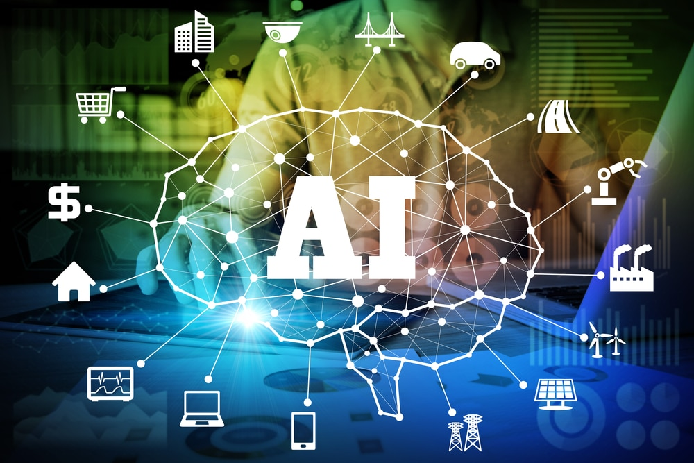
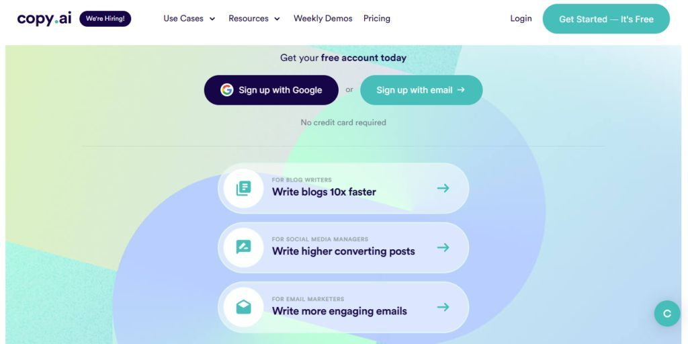
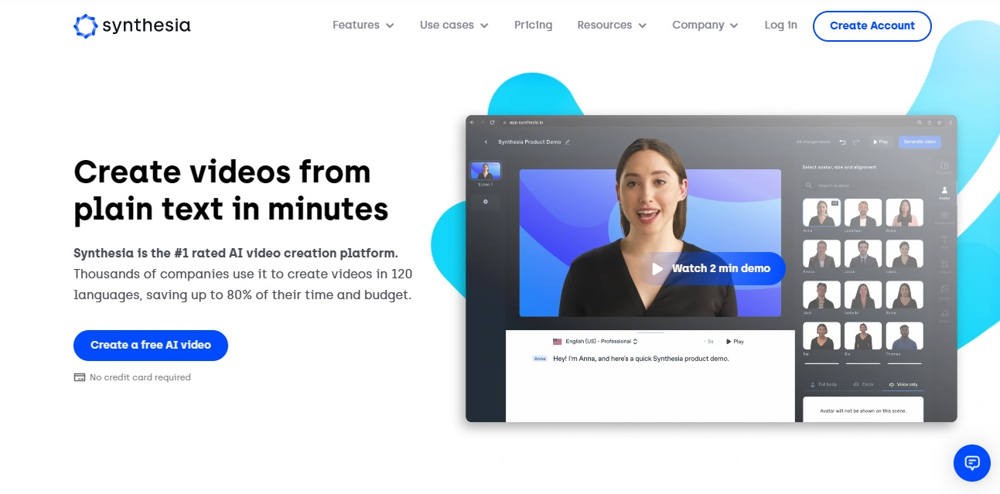
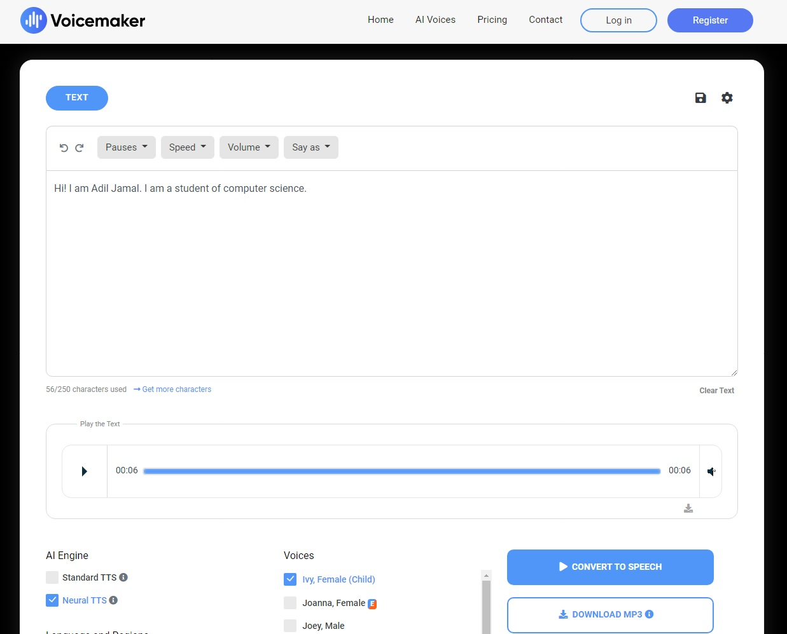
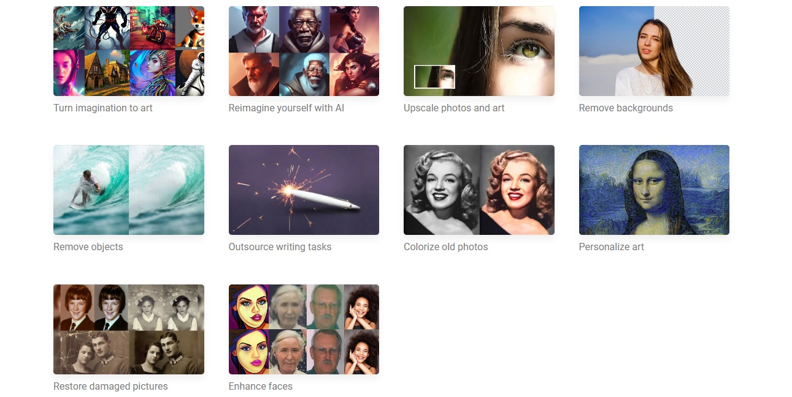

Artificial Intelligence is by far one of the most fascinating and astounding creations ever made in the history of mankind
A method for educating a computer, a robot controlled by a computer, or software to think critically and
creatively like a human mind is known as Artificial Intelligence.
AI can be developed by studying cognitive function. Intelligent systems and software are made available
through these research initiatives.
Artificial Intelligence has gone from science fiction to reality in just a few years. Intelligent machines that assist humans exist in real life as well as in science fiction films. We now inhabit a universe of a.i., which was only a tale a few years ago.
Whether we are conscious of it or not, artificial intelligence technology is now engrained in our society and is employed in our daily activities. Nowadays, everyone makes use of AI in their daily lives, from chatbots to Google, Alexa and Siri.
Artificial intelligence(A.I) is transforming the world around us. It has already made an impact on
multiple fronts. Not only that, it will change how we work and enjoy our daily life.

Just like you, we are also following the impact of AI. By no means, it will go away. From here on, AI
will only improve, and we need to adapt to the changes or perish..
Artificial intelligence is changing how we drive cars around us. Road accidents have always been a major concern for governments. Self-driving cars can truly change how we drive cars or let machine drive cars on the road. With a lot of trials for self-driving cars successful, self-driving cars are on roads in many countries including the USA. With time, they will become more ubiquitous and improve the road conditions and decrease road accidents considerably.
In conclusion, AI is now part of our daily lives and will continue to be for many years to come. For those in the business space, you should align your business process with emerging technologies based on AI to remain competitive. Otherwise, you might not be able to play at the same level as companies that have embraced AI.
This person does not exist uses a powerful image generator built with artificial intelligence by NVIDIA. It is currently the most realistic generator in the world at the resolution of 1024x1024 pixel.
each of the faces on this site is totally fake, refresh to the page and the algorithm generates a hyper-realistic but absolutely fake image of a person.
2. copy.ai Copy.ai is a new artificial intelligence technology that promises to revolutionize how we write copy. It uses a neural network to analyze a text and then generate a version of that text.
Copy AI is an AI-powered writing assistant that can help you improve your writing skills. The app uses natural language processing to analyze your writing and provide feedback on spelling, grammar, and style.
3. synthesia.io Create professional AI videos from text in 60+ languages. Synthesia is an AI video generation platform that enables you to quickly create videos.
4. voicemaker.in This is very amazing site which will help you to convert your text to speech. This site have free and premier option that can help you to convert your text to speech as per soft and hard effects. This Artificial intelligent is designed as that the machine voice looks similar to the human voice and the voices have great effects.
5. hotpot.ai Hotpot helps you create amazing graphics, pictures, and text. AI tools like AI Art Generator spark creativity and automate drudgery while easy-to-edit templates empower anyone to create device mockups, social media posts, marketing images, app icons, and other work graphics.
Copyright © 2023 AdilJamal